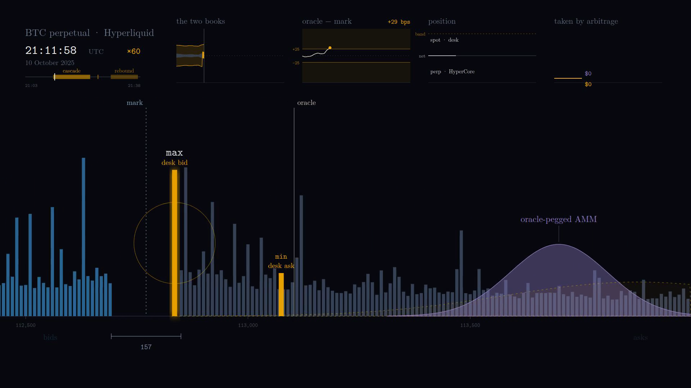
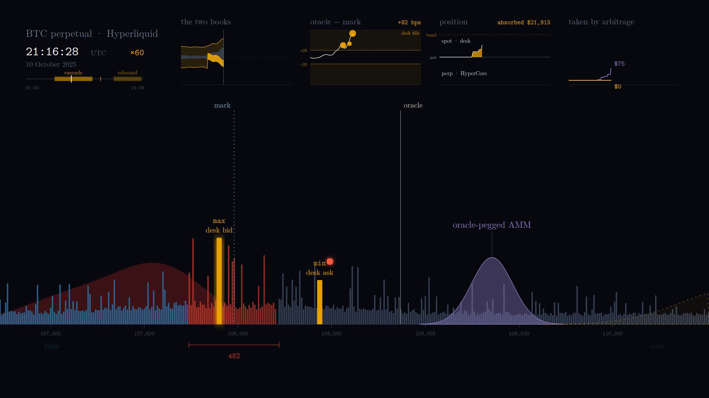
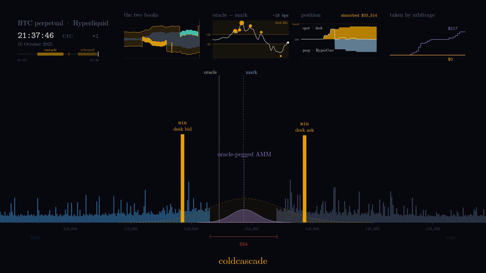

1inch Aqua · SwapVM · Privy · The Graph
A market maker that cannot be picked off on a stale price, and absorbs liquidation cascades.
It reads Hyperliquid's book inside the trade, hedges its own inventory on the perp, and leans into the crash when a liquidation cascade opens the book, to buy what normally only the house buys.
connecting to HyperEVM…
You do not need a wallet to use this. One tap and you have one on this chain — no extension, no seed phrase, nothing installed.
- sign in with an email address or a Discord account
- Privy makes you an embedded wallet — the key lives inside Privy's own frame and never touches this page
- a server wallet held under a policy drips the gas. It may send that and nothing else —
Then take a desk below: one swap, through 1inch's own router.
your fills
take it
make it step in
Posting forced notional near mark flips the desk into its second regime, on chain, right now.
desks
| desk | bid / ask now | round trip | margin | inventory | map | cover |
|---|
The margin is each desk's own choice — a parameter, not a property. The floor is the book's touch; the number is where this desk decided to sit above it.
already on the chain
questions
Why can't it be arbitraged?
Its price is not set before the trade. CoreQuote reads
Hyperliquid's book inside the call that settles the swap and clamps itself to what
crossing that book would have paid. There is no earlier price to take.
Is 20 bps the mechanism?
No. quietBps is a parameter each desk sets for itself. What the
program guarantees is the floor — never inside the book's own touch.
What does it not protect against?
Ordinary inventory risk. Somebody who is right about the next move still wins; the bound holds against the book the quote read, on one instrument, at one instant.
What are the two regimes this maker trades in?
Quiet. The desk quotes outside the book's touch on both sides,
so a round trip through it and back to Hyperliquid always loses. That is the everyday
state, and it is the whole of the zero above.
Absorbing. When forced sellers eat the bid — or when a liquidation map says they
are about to — one condition flips and the desk quotes inside the gap they opened,
becoming the best bid in the market and buying from people who have no choice but to
sell. Same contract, same call, one boolean the other way round.
What is a liquidation map, and why does the desk need one?
How much forced notional sits near mark. The book comes from the chain and nobody signs it; the map is reconstructed off chain and taken on trust, so it can only ever add a lean — a stale or undersized one is ignored, and the worst a broken keeper does is take a lean away.
The Graph · Substreams · the book, written down
The chain keeps no memory of the book. This one does.
Every fill the desks have signed, priced against the book its quote read — joined, days later, to what that book did next. None has ever landed inside the band.
reading the record…
the keeper's decision
the book archive — what the book was
HyperCore's book is not HyperEVM state: ask for any past block and the precompiles answer with the present, without an error. So this floor writes the book down itself, once a minute, and the same stream reads it back.
Ask for an instant and the panel returns the two observations that bracket it, each with its distance — never a number, never interpolated. It is the same answer the MCP server gives, from the same file, with the commands that reproduce it underneath.
ask the archive
the response object — the shape the MCP server returns
get_book_at_time in mcp/ returns this same
object from the keeper's live corpus; the page builds it in the browser from the
static file the same pass writes. The file carries the four logged numbers and the
block per observation; the server adds the poker and the transaction hash. Nothing
else differs.
Paste this into your MCP client and the archive answers from there —
the same file this form reads, the same two neighbours and never an interpolation.
Standard-library Python, no install; mcp/README.md has the smoke test.
{
"mcpServers": {
"coldcascade": {
"command": "python3",
"args": ["-m", "coldcascade_mcp"],
"cwd": "/absolute/path/to/coldcascade/mcp"
}
}
}
questions
Why does the book need writing down at all?
The precompiles answer with the present whatever block you ask for. There is no archive read: if nobody wrote it down while it was true, that instant does not exist.
What is a poke?
A call anyone can make: read the book's four words and emit them as a log. One a minute.
Why Substreams and not eth_getLogs?
The RPC caps eth_getLogs at a thousand blocks per query; the
corpus is over four hundred thousand. Even we could not read our own archive without
it.
Why is one fill out of the chart?
The operatorDesk take that built the exposure the hedge later covered. Its price came from the reserves the strategy was shipped with — not from a quote the bound held against the book — so it says nothing about the dead zone this chart exists to show. The file and the keeper's decision above still carry it.
absorbing the liquidation cascade, over 123 minutes of a real cascade
10 October 2025 — the book breaks and the desk leans towards the liquidation cascade.
A frozen tape, replayed. Every fill settles through 1inch's official router; every number comes from the same file.
the mechanism, in motion



loading results/oct10_replay.csv…
if you had tried to arbitrage these makers against the book, all day
Running total of what an arbitrageur actually extracted from each maker, closed at the book's own touch. The desk's line is flat on zero because there was never a size that worked — the same search ran against all four and put $1.4m of notional through the other three.
what the absorbing was worth
absorbed $36,878 of notional, and the reversion paid $1,306 — leaning does not capture a spread, it buys a dislocated asset and is paid when the price comes back. The line to beat is the dashed one: Hyperliquid's own touch.
— per dollar — · the venue's own touch: — per dollar —
the two books
Distance from the book's mid, in basis points. The grey band is Hyperliquid's own best bid and offer; the blue band is where the desk trades — outside on both sides in the quiet, one side crossing in when the book breaks.
the day itself, and which side leaned
Coinbase BTC-USD, one-minute closes — every book, fill and line on this page is derived from the shape of this path. The strip below it tracks which side is absorbing, minute by minute.
trough — · — with a side inside the book buying selling
Reads results/oct10_replay.csv, written by
forge test --match-contract Oct10Replay — 45 columns, documented in
results/oct10_replay.schema.md. Four makers ship into Aqua; every fill settles
through 1inch's official router. Both takers are blind:
test_takers_areBlind ships the same program into all four slots and the four
lines come out equal to the dollar — $14,226 absorbed, $775,589 of arbitrage notional each.
results/oct10_replay.source carries the session totals and the tape's hash.
questions
What are the five lines?
Blue, the desk. Violet, a maker pegged to the oracle's last refresh — the realistic competitor, which over ordinary flow pays nothing, same as the desk. Grey, a plain zero-fee curve: the desk's own program with one instruction removed, so it is the ablation, not a competitor. Amber, the same curve at 30 bps — what people actually deploy. Dashed, Hyperliquid's own touch, filled at L1's bps, holding no inventory — the answer to "compared to what?"
Why is there no ratio against the AMMs?
Both AMM lines lose money on what they absorbed, which is what a maker whose price was set before the trade does in a cascade. A zero and a pair of signed numbers — never a ratio.
What is the violet line to beat?
Over this flow: no one. The pegged maker and the desk both pay $0. The line that matters is the dashed one — L1's own touch — and the desk clears it with a smaller book: 354 bps per dollar against 215.
Privy · a server wallet · a policy
Two live shorts stand on chain 999. One was sent by the owner, by hand. The other by a key that can do nothing else.
signer one — the owner's hand
short 0.00017 BTC entry $79,513 · crossed, filled at the book · 7 Sep
The owner sent cover() itself: one transaction, an IOC
short queued to HyperCore, filled, with the fill's id written back into the desk.
signer two — a key that can only do thisprivy
short 0.00015 BTC entry $78,730 · limitPx 78,493 — the bid less its 30 bps of room · 8 Sep
Nobody signed it. The owner armed the desk and went away; a
five-minute cadence read coverPreview(), decided, and a Privy server wallet
sent cover().
Two controls, and neither depends on the other
being right. On chain the account decides what the key can reach:
cover transfers nothing, and every other entry point is
onlyOwner. Off chain the policy decides what the key can express:
eth_sendTransaction only where the chain is 999, the recipient is that desk,
the value is zero and the calldata decodes to cover(). The wallet holds HYPE
for its own gas, and there is no transaction it can sign that sends any of it anywhere.
what the live wallet refuses
| asked of the live wallet | answer |
|---|---|
cover() on the desk, chain 999, value 0 |
allowed — stopped at the node; the check sends a nonce far ahead |
the same cover() on the hedged desk |
policy_violation |
close() — returns the desk's inventory to its owner |
policy_violation |
armHedge() — the operator rewriting its own ceiling |
policy_violation |
transfer() of the desk's UBTC |
policy_violation |
personal_sign |
policy_violation |
the same cover() on Ethereum mainnet |
policy_violation |
cover() with 1 wei attached |
policy_violation |
cover() with no owner signature |
401 — the app secret alone signs nothing |
a partial {to, data} aimed anywhere else |
policy_violation — an unpopulated request is still read on the fields it does carry |
| does the wallet have an owner? the policy? | both, or the run fails |
The full run is node script/hedge-check.mjs against the
live wallet; this table is its output, eleven asks and their answers.
questions
Why does the check ask for close() and armHedge()?
Because they differ from the one allowed call in four bytes of calldata and
nothing else — a policy that only read the envelope would pass them. close()
returns the desk's inventory to its owner; armHedge() is the operator
rewriting its own ceiling. Denying those two is what makes "scoped to
cover()" mean anything.
How is a false "allowed" kept out of the run?
A request Privy still has to populate gets its gas estimated first, so
calldata the desk would revert on comes back as
transaction_broadcast_failure before the policy has said anything —
which reads exactly like a policy that allowed it. Every row above is either fully
populated or carries calldata that does not revert.
What stops the operator from rewriting its own policy?
Both wallet and policy are owned by the same P-256 key, and that is the
second lock. A policy is not enforced at all on a wallet whose owner_id is
null, and a policy whose own owner_id is null can be rewritten by anything
holding the app secret. An owned wallet under an unowned policy is a lock with its key
beside it.
Which transaction does the cover actually fire?
cover is the hedge a desk's owner has authorised. cover()
is a separate transaction, sent by the owner or by an operator the owner names, and it
queues an order: CoreWriter hands it to HyperCore, which executes it seconds later and
may reject or partially fill it without failing the transaction that carried it. A fill
is read back off HyperCore. The desks that used it are the two above.
Its cloid, 3, was the desk's coverCount at that fill, and both
hedge events of the same transaction are indexed on it. Call coverCount()
today and it reads 4: a later probe sent a cover() the desk answered
HedgeSkipped — flat, nothing to hedge — and the counter counts decisions,
not fills.
curl -s https://api.hyperliquid.xyz/info \
-H 'content-type: application/json' \
-d '{"type":"clearinghouseState","user":"0xa09765E0bBC38E1Ae37f1EB9f2D75b4cEd4dc144"}'
curl -s https://api.hyperliquid.xyz/info \
-H 'content-type: application/json' \
-d '{"type":"clearinghouseState","user":"0xB4ad3Fc0702145fB7a1DE72576968f9A30987a7f"}'